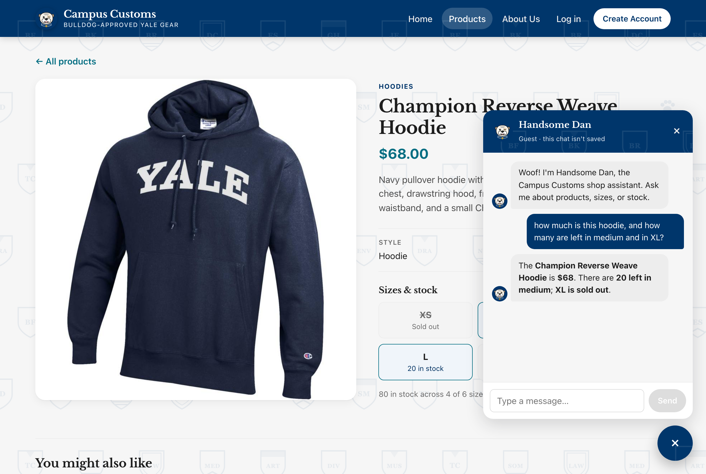
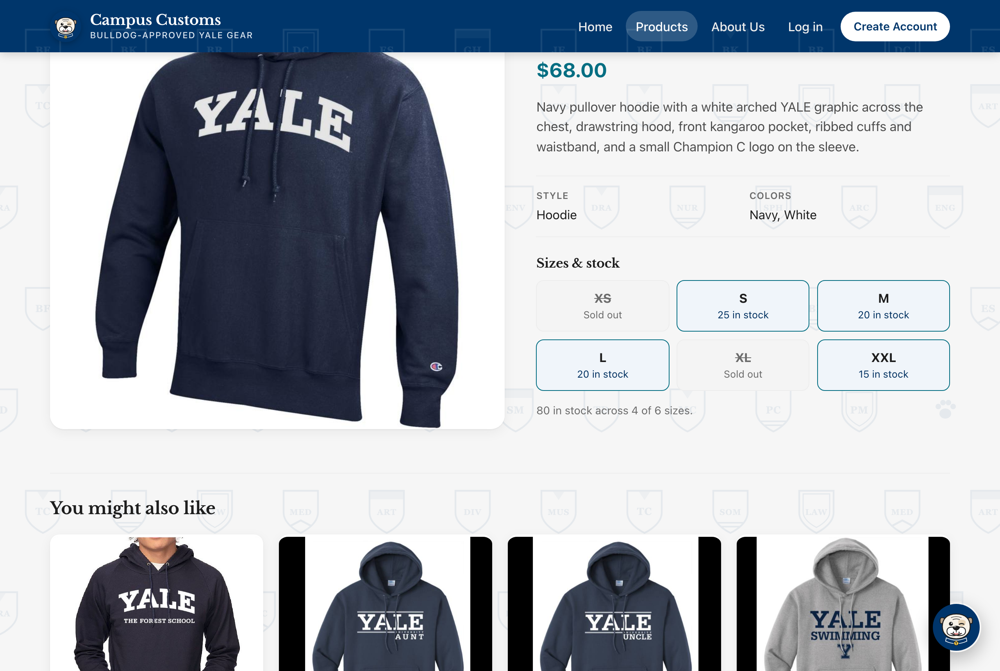
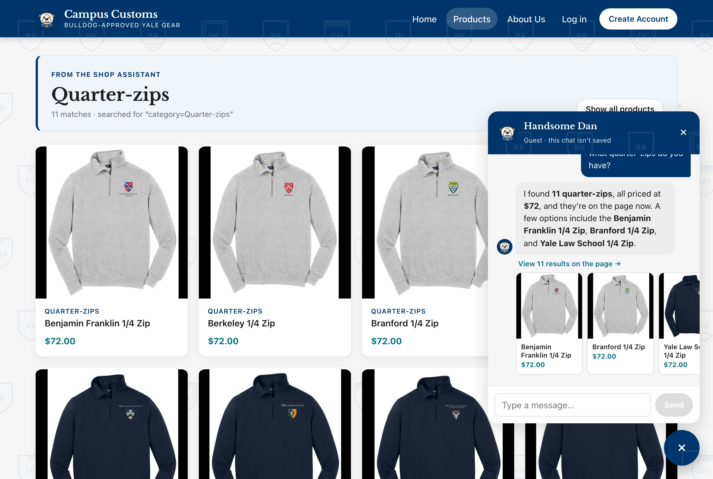
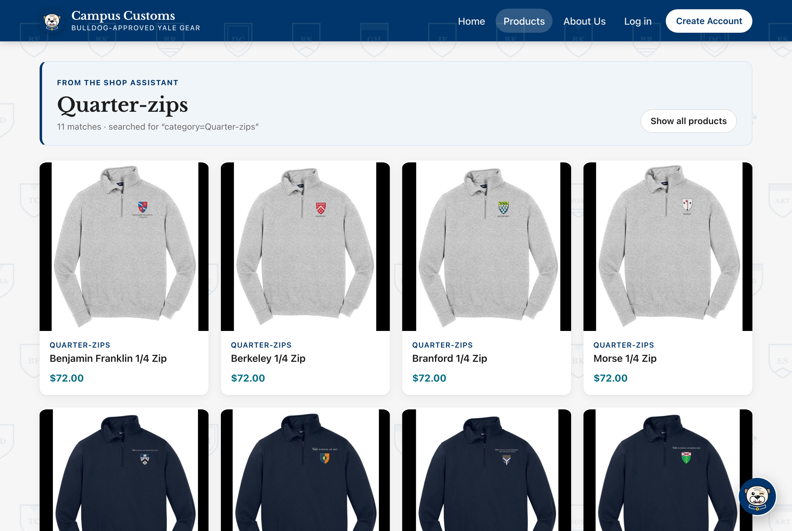
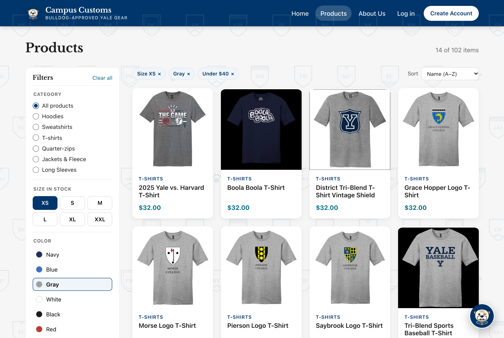

Each check below was run in a real browser (Chrome) on the running site at http://localhost:5173, as a
guest shopper, with the chatbot on gpt-5.6-luna. Every number the site showed was compared with
data/campus_customs.db. Click any screenshot to open it full size.
| # | Check | Result |
|---|---|---|
| 1 | Chat checks an item's inventory and price (honest numbers from the database) | ✔ Pass |
| 2 | Dynamic search-result cards appear after a category question | ✔ Pass |
| 3 | Problem 9 usability feature: product filters (size, color, price) | ✔ Pass |
Check 1 — Chat checks inventory level (honest stock and price)
On the Champion Reverse Weave Hoodie product page, the shopper asked the chat: “how much is this hoodie, and how many are left in medium and in XL?”


Database values (catalogue.price and inventory.quantity for champion-reverse-weave-hoodie-1):
| Price | XS | S | M | L | XL | XXL |
|---|---|---|---|---|---|---|
| $68.00 | 0 | 25 | 20 | 20 | 0 | 15 |
What this proves: the chatbot quotes the real price and exact stock by size straight from
campus_customs.db, and it honestly says a size is sold out instead of guessing. Its answer matches both
the database and the product page.
Check 2 — Search-result cards appear after a category question
Starting on the Home page, the shopper asked the chat: “what quarter-zips do you have?”

/products?from=chat on its own and showed a “From the shop assistant · Quarter-zips ·
11 matches” banner above the matching product cards. The chat says “I found 11 quarter-zips… they’re on the page now,”
with three highlight cards and a “View 11 results on the page” link.

What this proves: a category question makes the agent search the catalogue and return structured matches, and the website turns them into product cards on the page. All 11 cards match the database's 11 quarter-zip products at $72. One of them is named “School of Architecture Crewneck”, but the catalogue lists it as a quarter-zip pullover, so it belongs there.
Check 3 — Usability feature from Problem 9: product filters
On the Products page, the shopper picked Size XS, Color: Gray and Price: Under $40 in the filter sidebar.

/products?size=XS&color=Gray&price=under-40.
What this proves: the size, color and price filters work together and show exactly the right products. The 14 results equal an independent count of products with XS in stock, a gray color and a price under $40. Because the filters are saved in the page address, opening a product and pressing Back returned to the same 14 results.